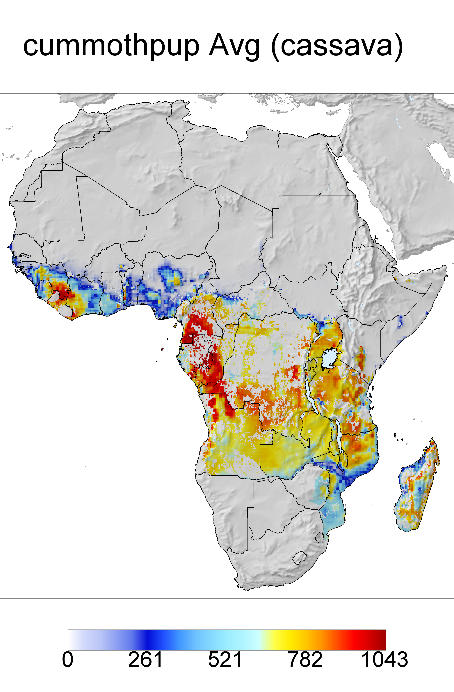

Report for "cummothpup"
Output maps


Please, click on images to see stat report.
You may also see raster statistics as barcharts (zoned and overall) and as cell frequency histogram.
Mapping parameters
- Parameter mapped: 28
- Lower cutting point: 0
- Upper cutting point: none
- Region clip: -1
- Altitude clip: 2000 m
- Stations above altitude clip were used to interpolate: yes
Input file log
This log reports names of input files and full command used for analysis.
Input file names:
- CmmothPup_Plants_14Jan23_Avg
GIS script syntax used:
africa
w=0 g=0 e=0 l=0
x=0 a=0 d=0 u=0
c=0 r=1 p=1
SaveDir=/c/cygwin/home/andy/outfiles/africa_cassava_test_3 longitude=5 latitude=6 year=11
parameter=28 interpolation=idw numpoints=3
lowercut=0 uppercut=0 legend1=cummothpup region=-1 alt=2000
resolution=1 lowBarCol= upBarCol=
(Fri, 26 Jul 2024 19:21:54 +0200)